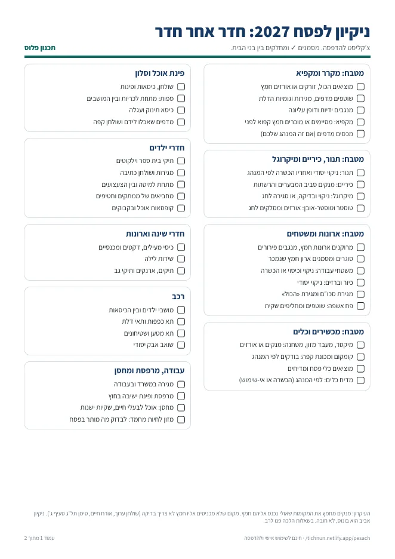

מתכנן ליל הסדר באקסל

אורחים, תפריט, כמויות לפי מספר הסועדים, רשימת קניות, תפקידים בהגדה ולוח הכנות.
₪19
לפרטיםליל הסדר בשנת 2027 (תשפ״ז) הוא ביום רביעי בערב, 21 באפריל 2027, ושביעי של פסח ביום רביעי, 28 באפריל 2027. כאן תמצאו צ׳קליסט ניקיון חינמי, מחשבון מצות ויין, מתכנן ליל סדר ומדריכים.

9 אזורים בבית, 39 משימות לסימון, לוח זמנים עד ליל הסדר וטבלת «מי אחראי על מה». A4, 2 עמודים, בלי הרשמה.
הורדת הצ׳קליסט הרשימה המלאה באתר
אורחים, תפריט, כמויות לפי מספר הסועדים, רשימת קניות, תפקידים בהגדה ולוח הכנות.
₪19
לפרטיםכמה מצות שמורות, חבילות מצה, בקבוקי יין ומיץ ענבים, לפי מספר האורחים ושיעור הרביעית שלכם. חינם.
למחשבון| מה | מתי |
|---|---|
| בדיקת חמץ (ליל י״ד בניסן) | יום שלישי, 20 באפריל 2027 בערב |
| ערב פסח: סוף אכילת חמץ וביעור חמץ | יום רביעי, 21 באפריל 2027 בבוקר |
| ליל הסדר | יום רביעי בערב, 21 באפריל 2027 |
| פסח, יום טוב ראשון (ט״ו בניסן) | יום חמישי, 22 באפריל 2027 |
| חול המועד (בארץ) | 23 באפריל 2027 – 27 באפריל 2027 |
| שביעי של פסח (כ״א בניסן) | יום רביעי, 28 באפריל 2027 (מתחיל בערב הקודם) |
| מימונה / צאת החג בארץ | יום רביעי, 28 באפריל 2027 בערב |
| חו״ל: סדר שני | יום חמישי, 22 באפריל 2027 בערב |
| חו״ל: אחרון של פסח (כ״ב בניסן) | יום חמישי, 29 באפריל 2027 |
התאריכים חושבו לפי הלוח העברי. זמני הדלקת נרות, סוף אכילת חמץ ושריפתו משתנים לפי העיר.